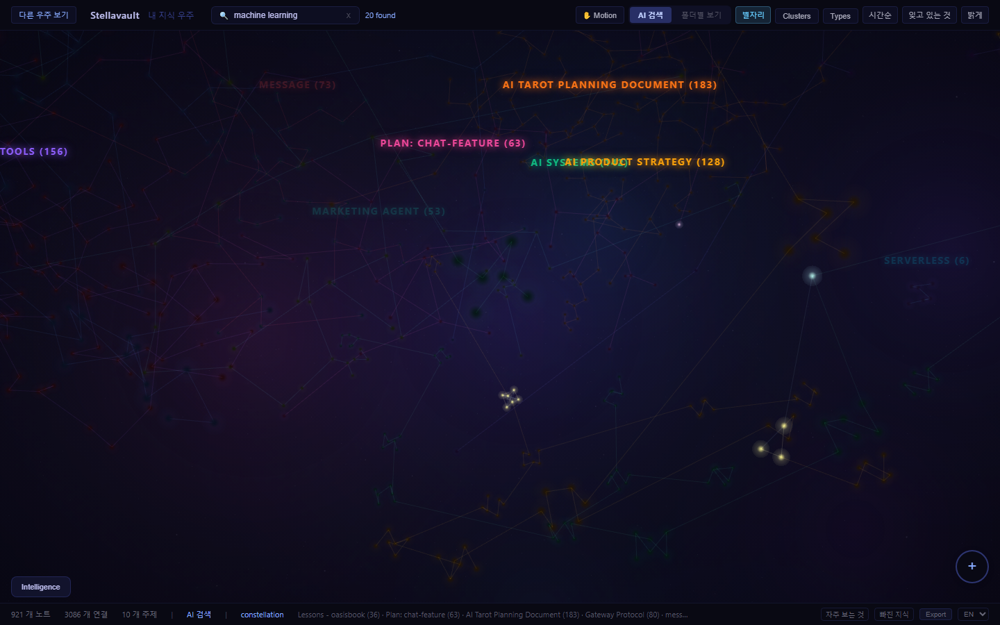
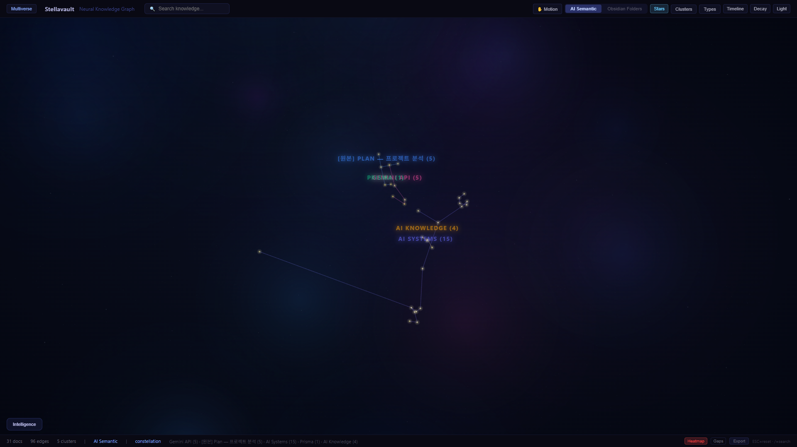
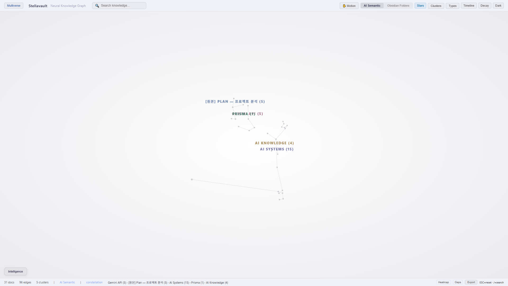

자기 컴파일 제텔카스텐 MCP 서버. PDF·유튜브·문서를 던져 넣으면 연결된 위키로 자동 정리됩니다. Claude가 21개 MCP 도구로 당신의 지식 전체에 접근합니다.
모든 지식 시스템을 망가뜨리는 세 가지. Stellavault가 셋 다 자동으로 해결합니다.
Andrej Karpathy와 Niklas Luhmann에서 영감. 모든 입력은 같은 파이프라인을 흐릅니다. 수동 정리는 전혀 없습니다.
Claude와의 모든 대화가 지식이 됩니다. 그 지식이 다음 대화를 개선합니다. Karpathy의 자기 진화 아키텍처.
session-save → daily-log → flush → wiki


명령 한 줄로 볼트를 Claude Code에 연결. Claude가 당신의 지식에서 검색·질문·초안을 작성합니다. 로컬 우선 — API 키 불필요, 데이터는 기기를 떠나지 않습니다.
claude mcp add stellavault -- stellavault servesearch하이브리드 AI 검색ask볼트 기반 Q&Agenerate-draftAI 초안 작성get-document전체 문서 + 메타get-related의미적 이웃detect-gaps지식 빈틈get-decay-status잊혀가는 기억get-learning-path복습 순서get-evolution아이디어 변화 추적link-code코드-지식 연결create-knowledge-nodeAI 노트 작성create-knowledge-link자동 연결log-decision결정 저널get-morning-brief데일리 브리핑list-topics토픽 클라우드exportJSON / CSVfind-decisions결정 조회create-snapshot컨텍스트 저장load-snapshot컨텍스트 복원generate-claude-mdCLAUDE.md 자동생성federated-searchP2P 검색텍스트 추출 내장. 외부 서비스 불필요. 타임스탬프 포함 자막.
npm install -g stellavaultnpx로 설치 없이.stellavault initstellavault setupstellavault graph당신의 지식은 기기에 머뭅니다. 핵심 기능에 API 키가 필요 없습니다.